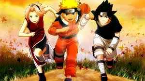
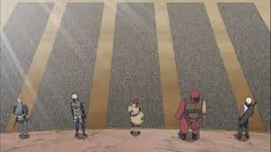

Naruto





『NARUTO』は、落ちこぼれ忍者であるうずまきナルトが、 里から認められ、火影（ほかげ）になるという夢を追いかける物語です。
最初は明るくエネルギッシュな少年漫画として始まりますが、 物語が進むにつれて「孤独」「友情」「戦争」「犠牲」といった 重いテーマを描く、成熟した作品へと進化していきます。
ナルトとサスケのライバル関係は、アニメ史に残る名エピソードの一つであり、 イタチ、ジライヤ、カカシといったキャラクターたちが物語に深い感情的重みを与えています。
⭐ 総合評価：9 / 10 — 感動的で、心に残る名作